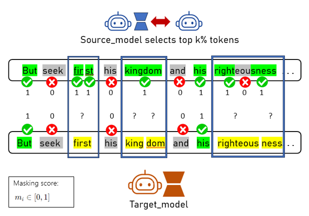
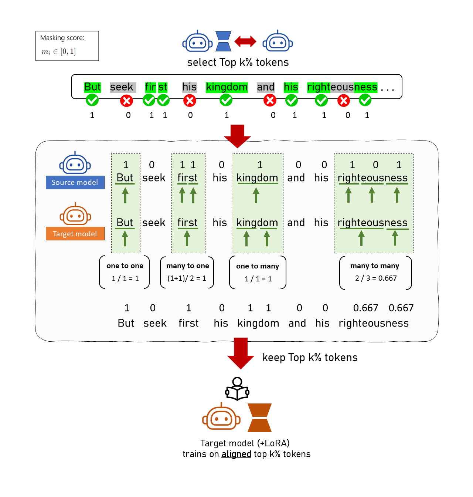

1
Synthetic Data Generation
- Input $k$ seed prompts to the source model to generate queries ($\mathbf{q}$) & response tokens ($y_i$).
- Diversity is enforced via ROUGE-L < 0.7.
2
Contrastive Excess Score
-
We divide the source model into two distinct roles to identify what LoRA actually "learned":
1. "Amateur"
(Base Model Only: $\mathcal{M}_s$)2. "Expert"
(Base Model + LoRA: $\mathcal{M}_s + A_s$) -
We identify informative tokens via Contrastive Excess, defined as:
$$S(y_i) = L_e(y_i) - L_a(y_i)$$
Where:
$$L_e(y_i) = \log P_{\mathcal{M}_s + A_s}(y_i \mid \mathbf{q}, \mathbf{y}_{\lt i}), \quad L_a(y_i) = \log P_{\mathcal{M}_s}(y_i \mid \mathbf{q}, \mathbf{y}_{\lt i})$$$$L_e(y_i) = \log P_{\mathcal{M}_s + A_s}(y_i \mid \mathbf{q}, \mathbf{y}_{\lt i})$$ $$L_a(y_i) = \log P_{\mathcal{M}_s}(y_i \mid \mathbf{q}, \mathbf{y}_{\lt i})$$
💡 Click to see the intuition behind TiTok's contrastive excess scoring!
Intuition: Contrastive excess is a token-level Log-Likelihood Ratio (LLR). If the base model is uncertain but the LoRA-equipped model is highly confident, the token receives a high score. This highlights exactly where LoRA injects decisive task knowledge.
3
Target LoRA Training & Filtering
-
Instead of training on everything, we focus only on the high-impact data points:
- Filter Samples: Keep top synthetic data samples based on average contrastive excess scores of the tokens.
- Filter Tokens: Select the top $k\%$ of tokens with the highest individual contrastive excess scores.
- Selective Training: Train the target model's LoRA adapters using only these informative tokens for loss computation
How about source and target models having different tokenizers?
The Challenge: When source and target models use different tokenizers, a single word might be split differently.
Example: "righteousness"
• Source:
• Target:
• Source:
["right", "eou", "sness"] (LoRA masks "eou")• Target:
["righteous", "ness"]

The Solution: Dual-Pointer Alignment Algorithm

- We use a Dual-Pointer Approach to align character spans and map masking scores ($m_i \in [0,1]$, where 1 = keep and 0 = mask)
- If the source model’s tokens match without being split: Copy the masking score.
- If they don’t match (e.g., source tokens are split): Compute the average score over the corresponding source token span and assign it to all aligned target tokens.